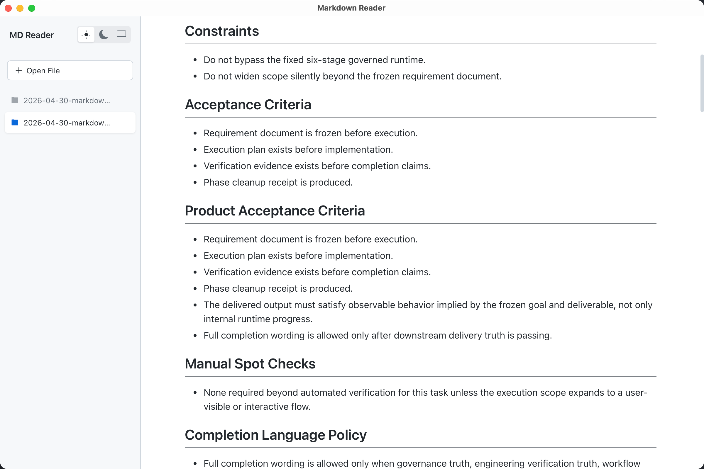
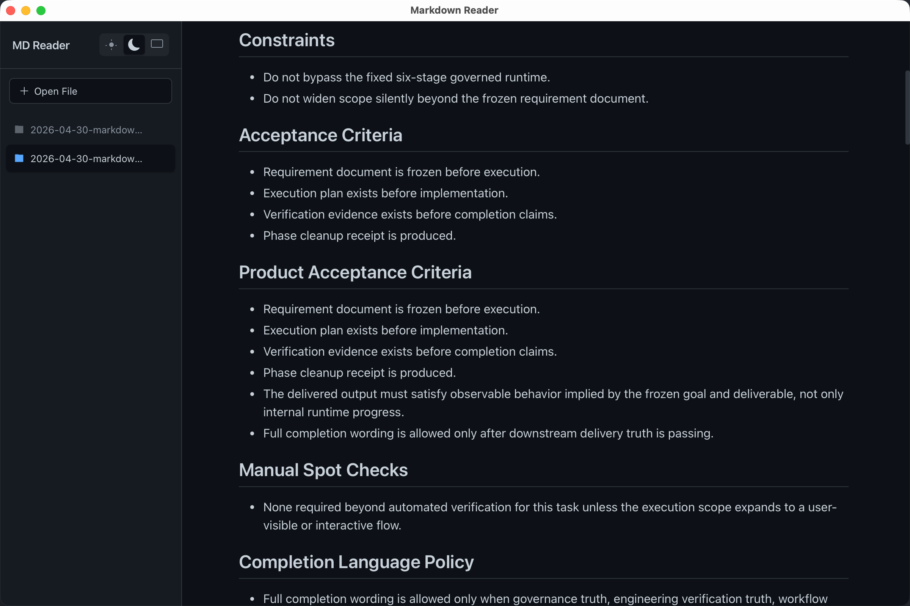

A lightweight desktop reader with GitHub-style rendering, multi-tab sidebar, and system-aware dark mode.


Exact same look as GitHub README pages. GFM tables, task lists, code blocks — all rendered perfectly.
Three theme modes with instant switching. Auto mode follows your OS appearance seamlessly.
Open multiple files at once and switch between them in the sidebar. Clean and organized.
Just drag .md files into the window. No file dialogs needed — it just works.
~3.3 MB binary. Built with Rust and Tauri. Starts instantly, uses minimal memory.
Native apps for macOS (ARM64 & Intel), Windows (x64), and Linux (x64). True platform feel.
Loading latest release…
MD Reader is a free, open-source desktop Markdown reader that renders .md files exactly like GitHub README pages. It supports GFM tables, task lists, code blocks, and more — all in a clean, distraction-free interface.
Yes, completely free and open source under the MIT license. No ads, no telemetry, no premium tiers. Download and use it forever.
MD Reader runs on macOS (both Apple Silicon and Intel), Windows x64, and Linux x64. All platforms get native builds with genuine platform look and feel.
MD Reader is built with Rust and Tauri, making it extremely lightweight (~3.3 MB) compared to Electron-based alternatives. It uses react-markdown for GitHub-accurate rendering, and includes features like multi-tab sidebar and system-aware dark mode that many free readers lack.
Absolutely. MD Reader works completely offline. No internet connection required to read your local Markdown files.
Three ways: drag and drop .md files into the window, click "Open File" in the sidebar, or use the file dialog. You can open multiple files and switch between them using the sidebar tabs.